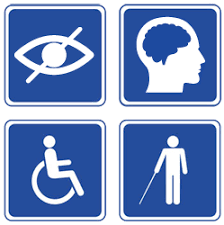

Assignment 2
1.1 Describing the content and layout for each page
A website layout is a pattern (or framework) that defines a website’s structure. It has the role of structuring the information present on a site both for the website’s owner and for users. It provides clear paths for navigation within web pages and puts the most important elements of a website front and center.[1]
- A good layout keeps users on the site because it makes important information easily accessible and intuitive to find. A bad layout frustrates users which then quickly leave the site because they can’t find what they are looking for.
- For this reason it’s best to take as long as you need to find a good layout, because users won’t give you more than a few seconds of their time.
- There’s a strong relationship between the layout and the engagement of users
- with the website. It determines how long they dwell on the website pages, how many pages they browse and how often they come back to the website.
- So, besides overcoming the problem of split-second choice, a good layout comes with additional benefits. Engaging visitors can be a rewarding effort.
- When selecting a layout, it might be useful to also consider the Gestalt law of
- closure. It says that, even if an image shape is not complete, the human eye tends to fill in the visual gaps and recognize the image as a whole.
- You won’t pay attention to details, rather focusing on the global view of the pages forming the website; users will find themselves the meaning path.
- You pay attention to details, using some additional seconds to grow the engagement exponentially.
- You intentionally won’t pay attention to details, letting originality speak for itself; users will find themselves the meaning path, and they will keep a strong memory of your website.
1.5 Describing copyright and other constraints affecting websites
Copyright Notices are published by the Intellectual Property Office to help explain specific areas of copyright in the UK. This notice is aimed at small businesses and individuals who may wish to use digital or photographic images on the web. It also provides advice for people who may find their own images being used online. This notice is not meant as a substitute for legal advice on particular cases, but it can help readers gauge the possible consequences of a particular course of action. It is not a conclusive view of the law – only a decision of the court can deal with that.
Court cases can be expensive, as they often result in the user of the image paying the cost to use the photo, plus legal costs of themselves and the copyright owner and possibly other financial compensation for copyright infringement, which may amount to more than the cost of a licence to use the image. Further, the user of the infringing copy could also be asked to take down and permanently remove all copies of the image from websites as well, unless permission from the copyright owner is secured. Deliberate infringement of copyright on a commercial scale may also lead to a criminal prosecution. Even in situations where people may think their copyright infringement will not be detected, they run the risk of being discovered and subsequently being pursued through the courts.[2]
[2] https://assets.publishing.service.gov.uk/government/uploads/system/uploads/attachment_data/file/481194/c-notice-201401.pdf
1.6 Describing access issues that need taking into account - describe issues that people with disabilities may face when using web pages and how we can overcome them ?
everyone perceives and interacts differently in the online world.
Individuals who see, hear, move or think differently deserve the same opportunities to engage with your digital content as the rest of society. And with over 15% of the world’s population possessing some sort of disability, your website needs to be accessible for everyone, regardless of ability. For websites of all sizes, web content must be inclusive and accessible for all. Ensuring this not only benefits individuals with disabilities, but can also positively impact your SEO ranking, increase website traffic, remove legal risk, improve user experience, and enhance brand reputation.[3]
Blind users

Internet users who have no sight at all may utilize a screen reader, which reads the content of the web page, or rather the HTML code of the page, back to them. These machines sift through the HTML code and the technology deciphers what needs to be read aloud and what should be ignored.
Partial/poor sight
To take full advantage of the Internet, users with partial or poor sight may need to be able to enlarge the text on web pages.If your site is accessible to this group of users then the size of the text throughout the page will increase. Text embedded within graphics isn't resizable and may cause difficulties for this group of web users. Users with poor vision may also use a screen magnifier to enlarge the text size. Again, text embedded within graphics may cause difficulties as it can appear blurry and pixelated when magnified.
Deaf users
Deaf web users are often able to access the Internet in much the same way as able-bodied people, with one key exception - audio content.Be sure to provide subtitles or a written transcript. An additional disadvantage deaf users may face is that British Sign Language is actually their first language. As such, they may be unable to understand some advanced English words and sentences.
Keyboard/voice only users
Some of your site users don't have access to a mouse when browsing the Internet. Try putting yourself in their position by navigating your website using only tab, shift-tab, and the return key.
Other people who may access your website that have disadvantages include:

- Some epileptic users who must always be careful to avoid seeing flickering between 2 and 55 Hz
- Web users from outside your industry who may not understand industry jargon or acronyms
- Web users whose first language is not English and who may not be able to comprehend complicated language[4]
[3] https://go.monsido.com/accessibility-2020
[4] https://www.webcredible.com/blog/how-disabled-users-access-internet/
1.7 Describe which are the appropriate file types for websites

With current browsers supporting more file types than ever before, it is important that you are clued up on which file formats work best on your website.Using the wrong file format can affect the way images appear on your website and may determine whether users can in fact see those images. As well as this, incorrect file formats can have a negative effect on your page speed[5]
While downloading files and viewing websites, you’ll meet up with many file formats. Most are common, and encountered frequently, others are more obscure and require specialist programs to open or use. Here, we have a list of the file types, along with the applications you’ll need to get them going on your computer.
- AVI — Audio/Video Interleaved
- CSS — Cascading StyleSheet
- EXE — EXEcutable file
- GIF — Graphics Interchange Format
- HTML/ .HTM — HyperText Markup Language file
- JPG/ .JPEG — Joint Photographic Experts Group file
- MIDI/ .MID — Musical Instrument Digital Interface
- MP3 — MPEG Layer 3 sound file
- MPEG/ .MPG — Motion Picture Experts Group file
- MOV/ .QT — QuickTime MOVie
- PDF — Portable Document Format
- PNG — Portable Network Graphics
- RAM — Real Audio Movie
- RAR — RAR archive
- TIFF — Tagged Image File Format
- TXT — TeXT file
- WAV — WAVe sound file
- ZIP — ZIPped file.[6]
[5] https://www.ballyhoo.co.uk/What-are-the-Best-File-Formats-for-Your-Websites-Images.html
[6] https://www.yourhtmlsource.com/starthere/fileformats.html